Part 1 — Exploratory Data Analysis · Part 2 — Multiclass Modelling
A dataset of steel plates' faults, provided by Semeion, Research Center of Sciences of Communication, classified into seven different types. The goal it was built for is automatic pattern recognition — training a model to assign the fault type from production attributes alone.
The Semeion / UCI Steel Plates Faults set: 1,941 rows × 34 columns — one row per detected defect, 27 predictors and seven one-hot target columns. No missing values anywhere.
The 27 predictors fall into four groups:
| Group | # | Columns |
|---|---|---|
| Position | 4 | X_Minimum, X_Maximum, Y_Minimum, Y_Maximum |
| Size & shape | 15 | Pixels_Areas, X_Perimeter, Y_Perimeter, LogOfAreas, Log_X_Index, Log_Y_Index, SigmoidOfAreas, Square_Index, Empty_Index, Edges_Index, Edges_X_Index, Edges_Y_Index, Outside_X_Index, Outside_Global_Index, Orientation_Index |
| Luminosity | 4 | Sum_of_Luminosity, Minimum_of_Luminosity, Maximum_of_Luminosity, Luminosity_Index |
| Process | 4 | Length_of_Conveyer, Steel_Plate_Thickness, TypeOfSteel_A300 / TypeOfSteel_A400 |
| Target | 7 | Pastry, Z_Scratch, K_Scatch, Stains, Dirtiness, Bumps, Other_Faults |
Target → Univariate → Bivariate → Correlation
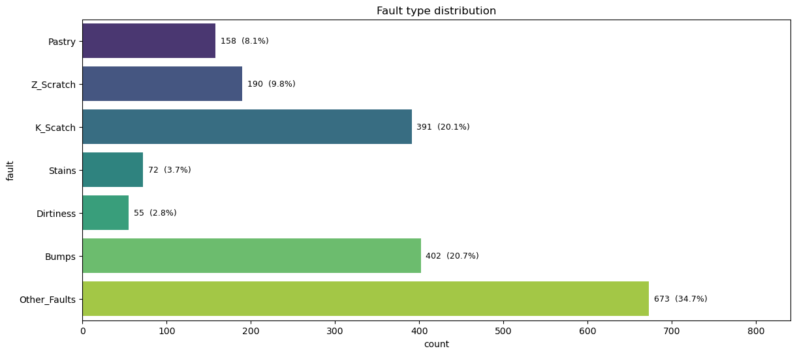
| Fault type | Records | Share | Train rows (80%) |
|---|---|---|---|
| Other_Faults | 673 | 34.7% | 538 |
| Bumps | 402 | 20.7% | 321 |
| K_Scatch | 391 | 20.1% | 313 |
| Z_Scratch | 190 | 9.8% | 152 |
| Pastry | 158 | 8.1% | 126 |
| Stains | 72 | 3.7% | 58 |
| Dirtiness | 55 | 2.8% | 44 |
| Total | 1,941 | 100% | 1,552 |
The classes are imbalanced, 34.7% vs 2.8% — so every search in Part 2 optimises macro-F1, which weights all seven classes equally.
One column at a time — the 24 continuous columns as distribution plus boxplot with the skew printed on each panel, the three low-cardinality ones as bar charts.
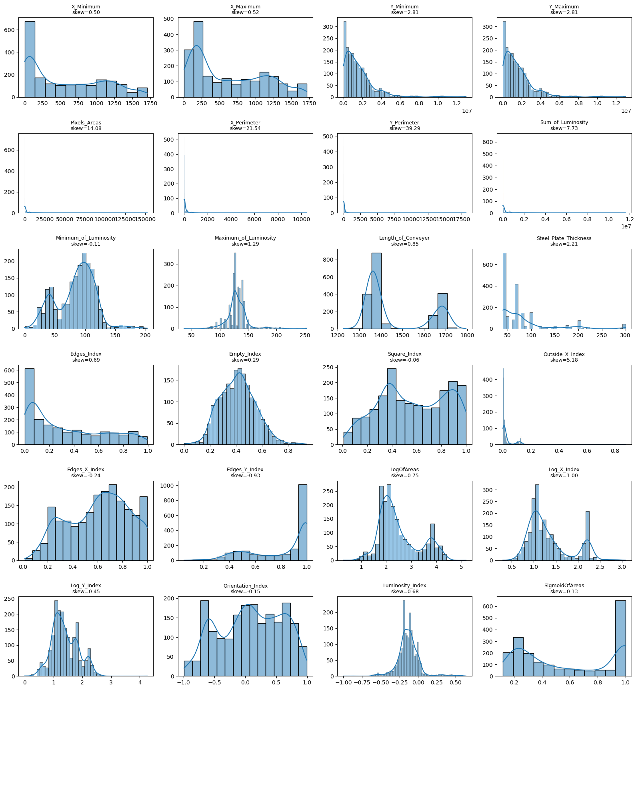
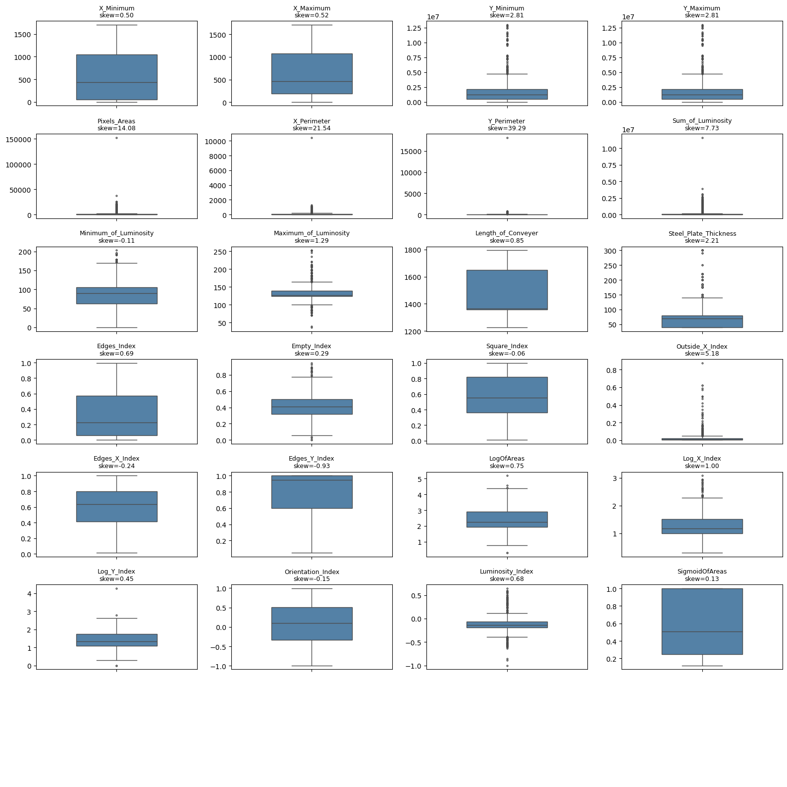
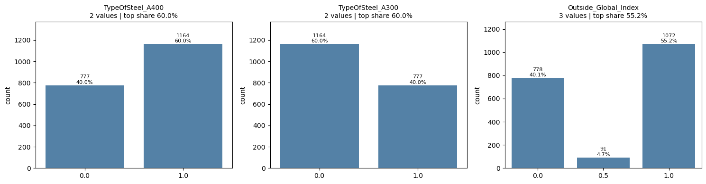
Each feature against the fault label — the continuous ones as per-class densities and boxplots, the categorical ones first as raw counts, then as lift against each class's own prevalence.
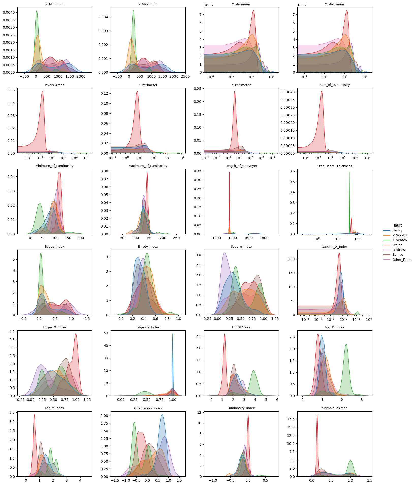
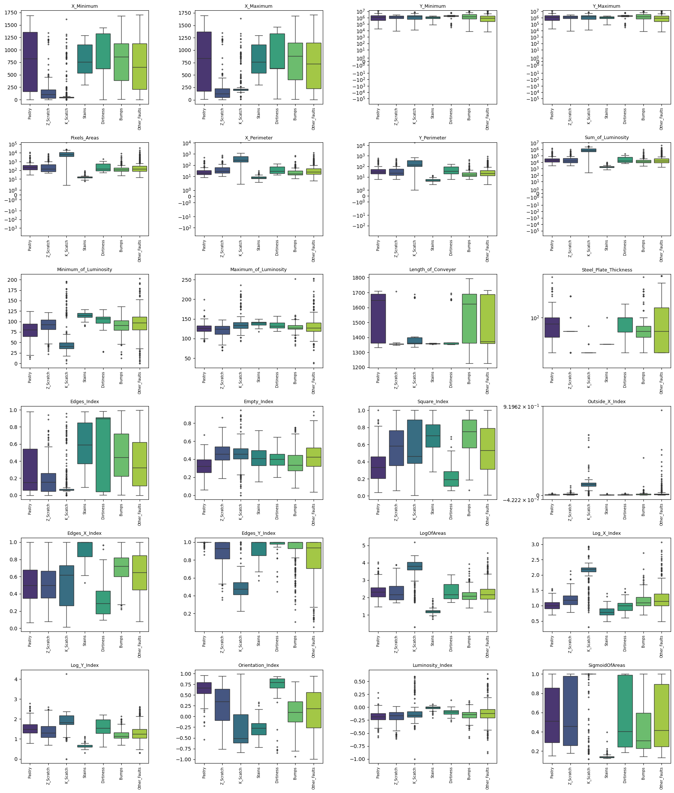
LogOfAreas and Pixels_Areas, Stains at the bottom, and their
densities barely overlap the other five classes on either.
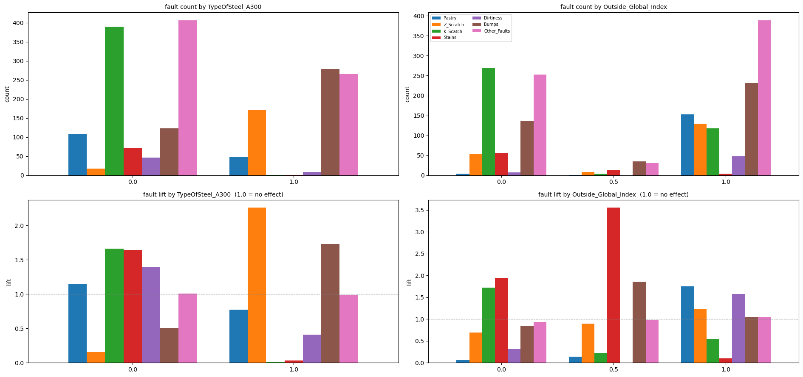
The steel type is close to deterministic for three of the seven faults — the share of each fault falling on each steel type:
| Fault type | on A400 | on A300 |
|---|---|---|
| K_Scatch | 99.7% | 0.3% |
| Stains | 98.6% | 1.4% |
| Dirtiness | 83.6% | 16.4% |
| Pastry | 69.0% | 31.0% |
| Other_Faults | 60.5% | 39.5% |
| Bumps | 30.6% | 69.4% |
| Z_Scratch | 9.5% | 90.5% |
| All records | 60.0% | 40.0% |
Pearson correlation between every pair of the 26 features.
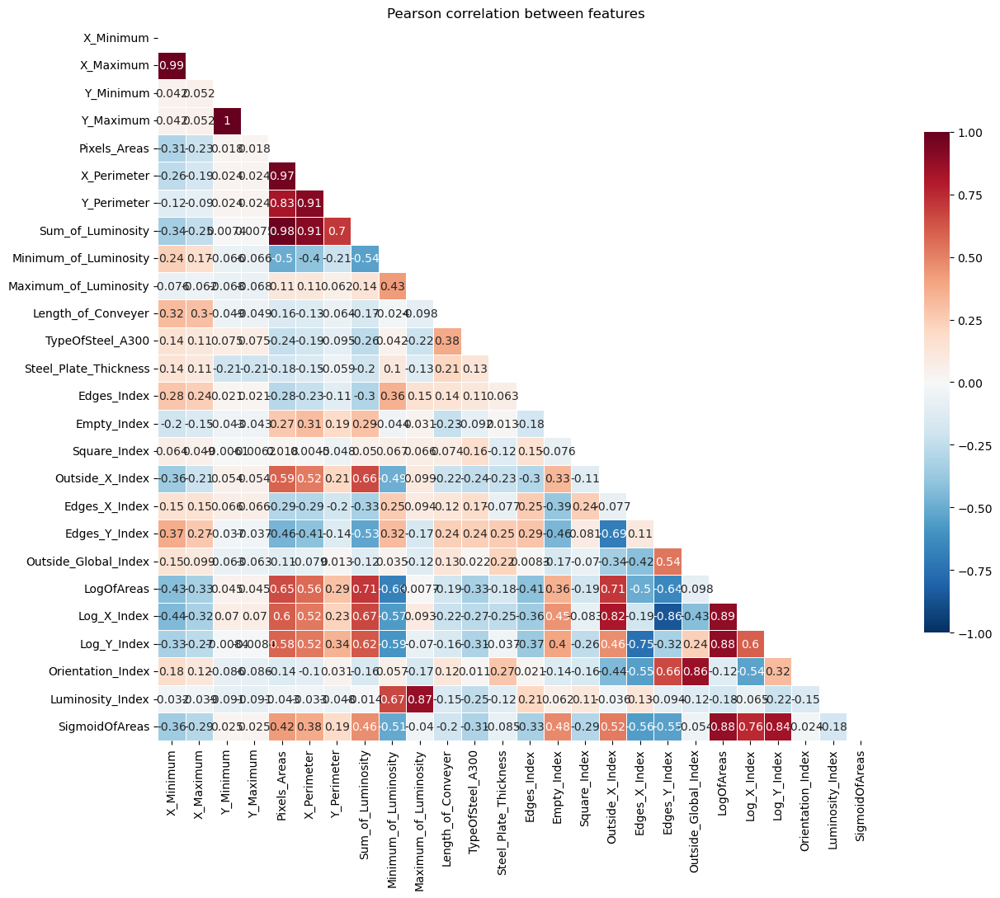
| Feature A | Feature B | Pearson r |
|---|---|---|
| Y_Minimum | Y_Maximum | 1.000 |
| X_Minimum | X_Maximum | 0.988 |
| Pixels_Areas | Sum_of_Luminosity | 0.979 |
| Pixels_Areas | X_Perimeter | 0.967 |
| X_Perimeter | Sum_of_Luminosity | 0.913 |
| X_Perimeter | Y_Perimeter | 0.912 |
TypeOfSteel_A400, an exact complement of A300.
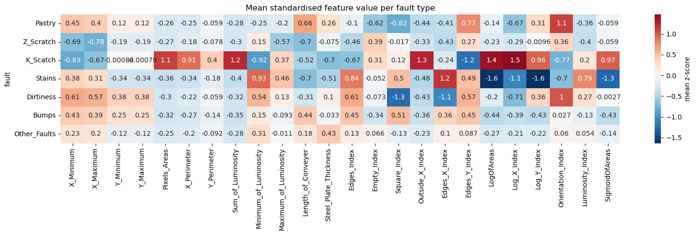
Log_X_Index +1.5) versus smallest and brightest
(LogOfAreas −1.6, Luminosity_Index +0.79).Square_Index −1.3,
Orientation_Index +1.0, with size and luminosity mild.
Which classes the features can actually tell apart:
From "what the classes look like" to "which type is this fault"
Part 1 asked what each of the seven fault types looks like. Part 2 asks a model to do the classification.
log1p on the four
heavy-tailed columns (skew 8.9–36.1 → 0.72–0.88), then
StandardScaler, then SMOTE, inside the CV pipeline. The trees take the raw columns:
monotone transforms and scaling change nothing for them.
class_weight='balanced' for LR,
RF and LightGBM; XGBoost has no such parameter, so a per-fold compute_sample_weight
does the same job.
Best tuned configuration per family, in 5-fold CV on the 1,552 training rows and on the untouched 389-record test set. Precision, recall and F1 are macro averages; rows are sorted by CV macro-F1:
| Model | 5-fold CV (n = 1,552) | Test (n = 389) | Paired vs. best | ||||||
|---|---|---|---|---|---|---|---|---|---|
| f1 | f1 std | bal acc | gap | f1 | bal acc | d | SE | ||
| LGBM | 0.8202 | 0.0085 | 0.8174 | 0.1798 | 0.8267 | 0.8335 | −0.0000 | 0.0000 | best |
| XGB | 0.8165 | 0.0162 | 0.8242 | 0.1752 | 0.8172 | 0.8423 | −0.0037 | 0.0040 | tie |
| RF | 0.8103 | 0.0155 | 0.8118 | 0.1628 | 0.8093 | 0.8400 | −0.0099 | 0.0039 | worse |
| LR + SMOTE | 0.6967 | 0.0126 | 0.7797 | 0.0247 | 0.6738 | 0.7568 | −0.1235 | 0.0050 | worse |
gap = train F1 − CV F1 (overfitting). d = fold-by-fold mean difference
against the best model, SE its standard error; tie means |d| ≤ 2·SE.
A single macro-F1 hides everything that matters here. Out-of-fold predictions from the final LightGBM — every row scored by a model that never saw it — broken out per class:
| precision | recall | f1-score | support | f1 std | pred ratio | |
|---|---|---|---|---|---|---|
| Pastry | 0.638 | 0.643 | 0.640 | 126 | 0.072 | 1.008 |
| Z_Scratch | 0.929 | 0.941 | 0.935 | 152 | 0.044 | 1.013 |
| K_Scatch | 0.961 | 0.949 | 0.955 | 313 | 0.027 | 0.987 |
| Stains | 0.931 | 0.931 | 0.931 | 58 | 0.041 | 1.000 |
| Dirtiness | 0.878 | 0.818 | 0.847 | 44 | 0.039 | 0.932 |
| Bumps | 0.676 | 0.713 | 0.694 | 321 | 0.020 | 1.056 |
| Other_Faults | 0.746 | 0.727 | 0.736 | 538 | 0.015 | 0.974 |
f1 std = spread of the f1-score across the five folds. pred ratio = predicted
count ÷ actual count, so > 1 means the class is over-predicted.
Which classes get mistaken for which — out-of-fold on the training rows, and on the held-out test set. Each row sums to 1, so the diagonal is that class's recall:
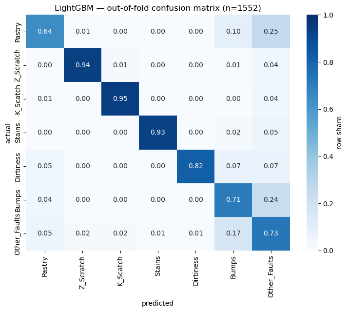
The eight largest off-diagonal cells of each matrix — proportion sets the direction, absolute count sets the priority, and a count of three or fewer (greyed) carries no weight at all:
Out-of-fold (n = 1,552)
| Actual | Predicted as | Share | n |
|---|---|---|---|
| Pastry | Other_Faults | 25.4% | 32 |
| Bumps | Other_Faults | 23.7% | 76 |
| Other_Faults | Bumps | 17.1% | 92 |
| Pastry | Bumps | 9.5% | 12 |
| Dirtiness | Bumps | 6.8% | 3 |
| Dirtiness | Other_Faults | 6.8% | 3 |
| Other_Faults | Pastry | 5.4% | 29 |
| Stains | Other_Faults | 5.2% | 3 |
Held-out test (n = 389)
| Actual | Predicted as | Share | n |
|---|---|---|---|
| Bumps | Other_Faults | 23.5% | 19 |
| Dirtiness | Other_Faults | 18.2% | 2 |
| Other_Faults | Bumps | 14.1% | 19 |
| Pastry | Other_Faults | 9.4% | 3 |
| Dirtiness | Bumps | 9.1% | 1 |
| Other_Faults | Pastry | 8% | 11 |
| Stains | Bumps | 7% | 1 |
| Bumps | Pastry | 5% | 4 |
Two views of the same model: what it uses overall, and what it uses per class.
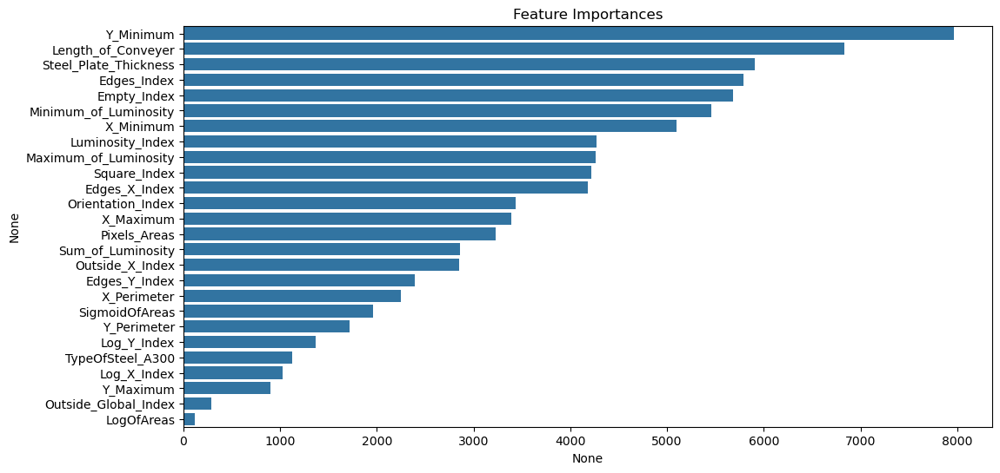
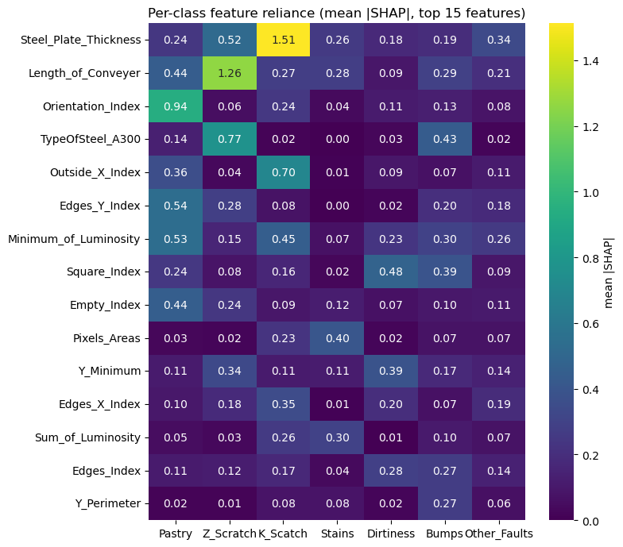
TypeOfSteel_A300 (0.77), Pastry on Orientation_Index (0.94), Dirtiness on
Square_Index (0.48) — the same three signatures the EDA found.
Y_Minimum tops the
bar chart, but it takes 1,939 distinct values across 1,941 rows — nearly a row index, so it offers
the most places to split; SHAP puts it mid-table. Binaries are buried the other way:
TypeOfSteel_A300 ranks near the bottom, yet SHAP shows it is Z_Scratch's single most
important feature.